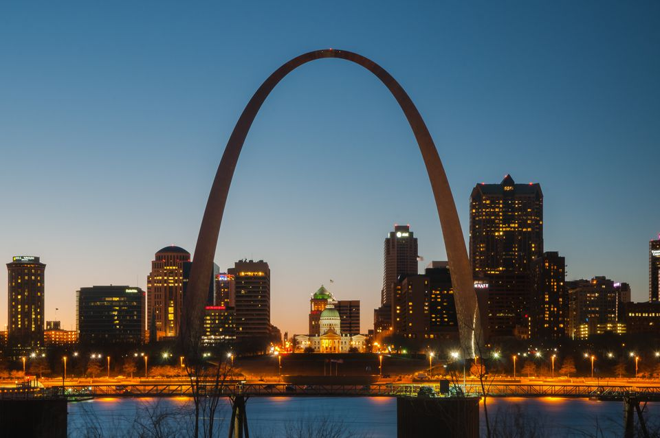
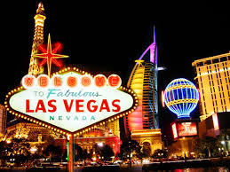
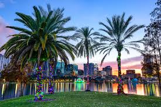
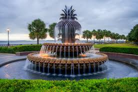
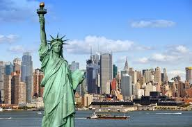

I have lived in St. Louis all my life. St. Louis is my home town. My family is here, my kids, my husband and my grandbabies. St. Louis has a lot to offfer as far as entertainment and sights to see. We have the arch, the zoo, the science center and more. People come from all around to visit us. We have a rich cultural environment. I love St. Louis.
 St. Louis, MO
Los Angeles, California, the city of Angels is a beautiful place to visit. Close to the water for beaches and many sights and sounds to enjoy as well as all the seafood you could imagine. I have a brother and niece there I love to visit.
City of Angels
Las Vegas, Nevada, is a great place to visit, lots of sights and sounds. They have fantastic shows and if you are getting married or renewing vows you can do it all up with an Elvis themed wedding, including the "real" Elvis. We visited one of the hotels on the Las Vegas strip, Circus Circus and they had a real circus with rides going on. All the hotels are themed hotels with lots to see and do and good food.
 Las Vegas, Nevada
Orlando, Florida another great destination place to visit and I would really love to retire in a warmer climate. I have visited Florida for Disney world, cruising and best of all, I also have family there. I have a beautiful niece and great niece living in Orlando and love to visit them when they are here in the Lou or when we travel to Orlando.
 Orlando, Florida
Charleston, South Carolina is closer to the east coast so we have beaches and sea life including fishing there. I spent a week there for a training class and my husband enjoyed the fishing and sights as well.
 Charleston, SC
New York is another fabulous play to visit and has a lot of tourist sights to see including the Statute of Liberty. My daughter once lived in New York and we have visited there several times. I would love to see the ball drop on New Years eve.
 Statute of Liberty
Chicago is the closest town to travel for us. I have a daughter and granddaughter that live in Chicago and we love to visit. St. Louis Cardinals and Chicago Cubs has a rich and fun rival going in the baseball arena. The lake in Chicago offers many cultural experiences including museum and ferris wheel. As well as my favorite superstar Oprah Winfrey lives there.
Chicago, IL
Honorable Mentions
© 2017 Denise Tims